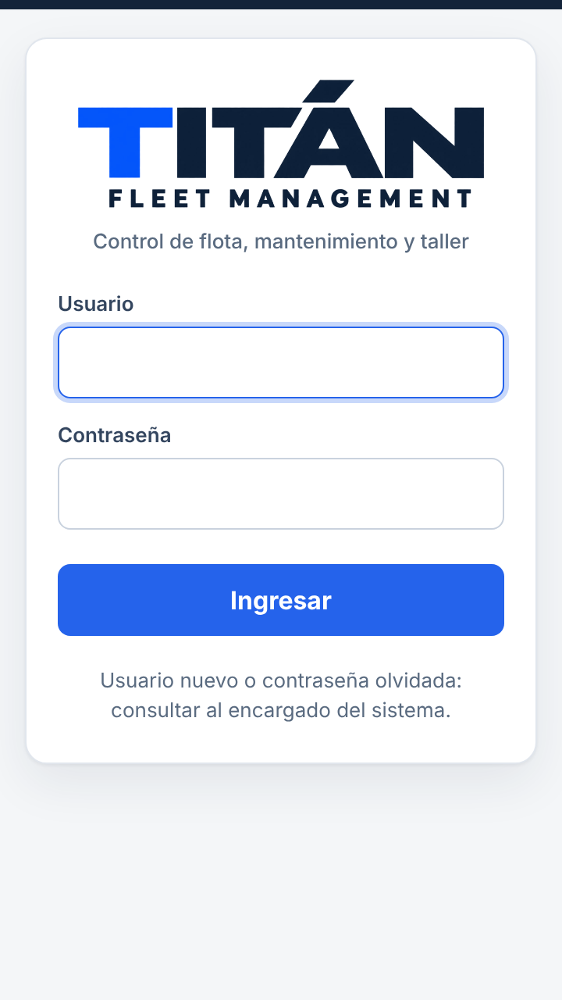
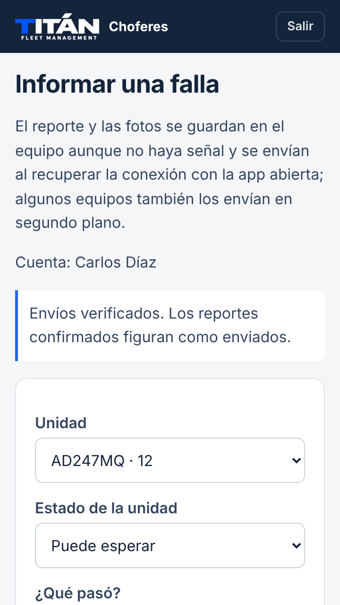

Guía rápida · ChoferesInformar una falla

Una falla, un reporte.
Desde el celular, con fotos y sin señal: el reporte queda guardado y se envía solo cuando vuelve la conexión.
iPhoneAndroidSin señal
1La primera vez

Ingresar con el usuario y la contraseña que entrega el encargado.
- 1Con señal, escanear el QR de la unidad o entrar a la dirección del sistema.
- 2Ingresar usuario y contraseña.
- 3iPhone: Compartir → «Agregar a pantalla de inicio».
- 4Android: menú ⋮ → «Agregar a la pantalla principal».
- 5Queda el ícono de Titán: abre directo el formulario, también sin señal.
2Escanear el QR de la unidad

Apuntar la cámara del celular al QR pegado en la unidad y tocar el enlace que aparece.
→

El formulario se abre con la unidad ya elegida.